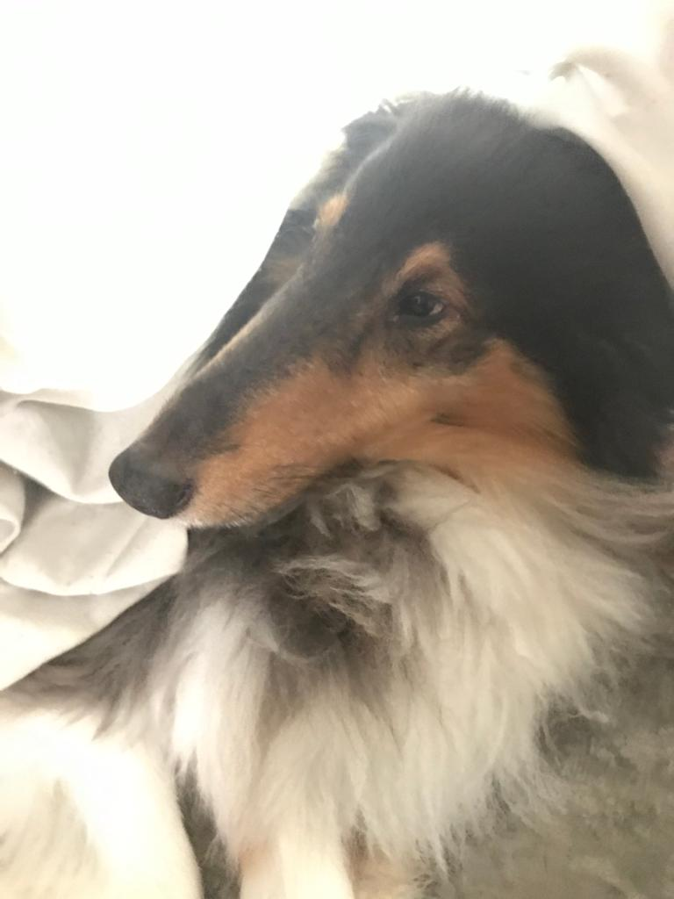
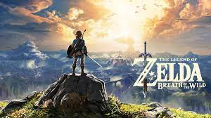

Neste site e parágrafo eu irei contar um pouco mais sobre mim:
Além dos meus passatempos, também gosto de ir ao shopping com os meus amigos, ir a trilhas, jogar com os meus amigos e ver séries e filmes.
Apesar de morar na cidade grande, gosto muito de ir a parques para caminhar/andar de bicicleta e ir a áreas mais "isoladas" como em trilhas.
Desde pequeno eu sempre tive cachorros, até agora já foram 5, sendo que atualmente eu estou apenas com 2. Por conta disso e de eu nunca ter tido um grande convívio com gatos, eu prefiro cachorros. As minhas cachorras atuais se chamam Ágata e Joie. Ágata:  Joie:
Meus passatempos preferidos são ver séries/filmes, jogar videogames, andar de bicicleta e resolver puzzles. Entre os jogos que eu jogo estão Valorant, Fortnite, Zelda, Mario e Pokémon. 